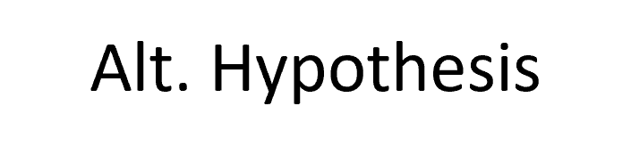
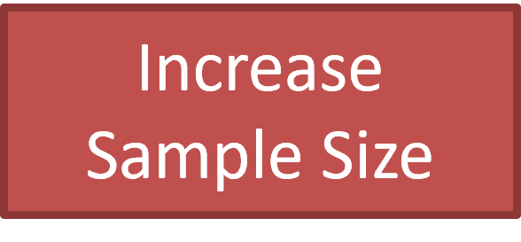

Lecture 2 - Statistical Modeling
CIVE 461/861: Urban Transportation Planning
Outline
- What is statistics
- What are key statistical measures to do transportation planning analysis
- How to do regression models
- Why statistics is really hard
Statistics Fundamentals
What is Statistics?
Study of methods and techniques to summarize & interpret data
Descriptive Statistics
- Relative standing
- Central tendency
- Variability
- Association
Measures of Relative Standing
- Quartiles are percentage points that separate data into quarters
- E.g., 25th percentile means 25% of data lie below this value (often referred to as first quartile)
- Interquartile range is difference between first quartile (25th percentile) and third quartile (75th percentile)
- 50th percentile often referred to as median
Measures of Central Tendency
- Median often more useful than arithmetic mean (average) because mean biased by outliers
- Interquartile range similarly resident to outliers relative to range, which include minimum & maximum values
Measures of Variability
- Variance & standard deviation more useful than range because use information from all observations
- Sample variance given by \[ s^2 = \frac{\sum_i(x_i-\bar{x})^2}{n-1}\]
- Why n-1? By using sample mean, lose one degree of freedom - i.e., \(n-1\) independent observations
- For small samples, tendency to underestimate standard deviation
- \(n-1\) approaches n as sample size grows
Measures of Association
- Covariance & correlation are measures of association between two variables
- Correlation a normalization of covariance to lie within interval [-1, 1]
- Note: possible for two variables with zero correlation to be nonlinearly related
Measures of Association
\[COV_p(X,Y) = \frac{\sum_i (x_i-\mu_X)(y_i-\mu_Y)}{N}\] \[COV_s(X,Y) = \frac{\sum_i (x_i-\bar{x})(y_i-\bar{y})}{n-1}\] Pearson product-moment correlation parameter \[\rho = \frac{COV_p(X,Y)}{\sigma_X \sigma_Y}\] \[r = \frac{COV_s(X,Y)}{s_X s_Y}\]
Properties of Estimators
Unbiasedness means the expected value (mean) of estimator equals the associated population value
Efficiency is a relative measure of variance. An estimator with a smaller variance is said to be more efficient
Properties of Estimators
Consistency exists if the probability of being close to the true parameter value increases with increasing sample size
Confidence Intervals
- Interval estimates are based on frequentist statistical theory
- They say nothing about the location of the true parameter value
- They are a measure of how likely it is for samples taken from the same population to have their parameter values lie in that interval
- E.g., a 95% confidence interval of [1.15,2.34] means that 95 out of 100 samples will have the parameter value of interest in the range 1.15 to 2.34
Hypothesis Testing
- Used to measure whether a difference in parameter values is likely to have arisen by chance or whether some other factor is responsible for the difference
- Statistical distributions used in hypothesis testing to estimate probabilities of observing the sample data, given an assumption about what should have occurred
- If observed results are extremely unlikely to have occurred by chance given assumed conditions, then assumed conditions are considered unlikely
- P(data│true null hypothesis) = Probability of observing the sample data conditional upon a true null hypothesis – NOT probability of null hypothesis being true
- Often test parameter value equal to zero
- Problem: often expect an effect and more interested in variation in effect
\[Z^* = \frac{(\bar{X_1}-\bar{X_2})-(\mu_1-\mu_2)}{\sqrt{\frac{s_1^2}{n_1}+\frac{s_2^2}{n_2}}}\]
Data Display Methods
Histogram useful when data naturally grouped
Box plot (or box and whisker plot)
Basic Regression
Regression Model Uses
- Prediction - Modeling existing observations or forecasting new data
- Outcome variable(s) can be
- Continuous like vote share in an election or future product sales
- Discrete like individual voting decisions or victory in a sporting event
- Outcome variable(s) can be
- Explore Association - Summarizing how well one variable, or set of variables, predicts outcomes
- E.g., identifying risk factors for a disease or attitudes that predict voting
Poll
Regression Model Uses
- Extrapolation - Adjusting for known differences between sample and population of interest
- E.g., sample data from self-selecting schools to make conclusions about all schools in state
- Causal inference - Estimating treatment effects
- E.g., exposure to a pollutant and health outcomes
Linear Regression
Consider experiment where we have values of a certain variable \(Y={Y_ùëñ}\) that takes different values based on the values of another variable \(X\). If the process is not deterministic, we will observe different \(Y_i\) for the same \(X_i\)
Let’s call \(f_i(Y|X)\) the probability distribution for \(Y_i\) for a given \(X_i\); this means we could have a different function \(f_i\) for each \(X\)
Linear Regression
However, such a general case is intractable; to make it more manageable, certain hypotheses about population regularity assumed: - Probability distribution \(f_i(Y|X)\) has same variance \(\sigma^2\) for all values of \(X\) - Mean \(\mu_i = E(Y_i)\) forms a straight line known as the true regression line & given by \[ùê∏(ùëå)=a+bX_i\] where \(a\) and \(b\) define the line & are estimated from sample data - Random variables \(Y_i\) are statistically independent; i.e., a large value of \(Y_1\) doesn‚Äôt necessarily make \(Y_2\) large

Linear Regression
Model is often written as \(Y_i = a + bX_i + e_i\) where \(e_i\) measures error/disturbance in data and includes both measurement & specification error
Fundamental Graph of Linear Regression
Important Considerations for Linear Regression
- Important to distinguish between errors \(e_i\), which are unknown & associated with true regression line and differences \(\epsilon_i\) between observed \(Y_i\) & fitted \(\hat{Y}\)
- Least squares estimation (LSE) - most common line-fitting method, results from the minimization of \(\sqrt{\epsilon_i}\)
- A change of variables can help to understand properties of the linear regression model \[x_i = X_i - \bar{X}\] where \(\bar{X}\) is the mean of \(\mathbf{X}\)
Important Considerations for Linear Regression
- Previous regression lines keep their slopes (\(b\) and \(\hat{b}\)) but change their intercepts (\(a\) and \(\hat{a}\))
- Change is useful because new variable \(x\) has property that \(\sum_i x_i = 0\)
- Under this transformation, LSE are given by \(\hat{a} = \hat{Y}\) so fitted line goes through the center of gravity (\(\bar{X}, \bar{Y}\)) of the sample and \[\hat{b} = \sum_i \frac{x_i Y_i}{x_i^2}\]
Important Considerations for Linear Regression
Estimator properties given by
\[\begin{array} EE(\hat{a}) = a & Var(\bar{a}) = \frac{\sigma^2}{n} \\ E(\hat{b}) = b & Var(\bar{b}) = \frac{\sigma^2}{\sum_i x_i^2} \\ \end{array}\]Interesting Experimental Design Point from Previous
- Considering \(Var(\hat{a}) = \frac{\sigma^2}{n}\) & \(Var(\hat{b}) = \frac{\sigma^2}{\sum_i x_i^2}\)
- Variance of both estimators decreases with sample size
- Variance of \(\hat{b}\) tends to grow with closer together \(x_i\) & \(\hat{b}\) becomes unreliable estimator
- Increased data spread (sampling points from across expected range) tends to decrease \(Var(\hat{b})\)
Properties of Regression Estimators
- If \(E(e|\mathbf{X}) = 0\), LSE have some desirable properties
- Estimators are unbiased (i.e., expected values are equal to true values for \(a\) and \(b\))
- Estimators are consistent (i.e., approach the true values with increasing sample size)
- Assumption easily violated if relevant variable omitted from model correlated with observed \(\mathbf{X}\)
- E.g., trip generation
- Depends on household income and number of vehicles, which are positively correlated variables since household more likely to own a vehicle as income grows
- If number of vehicles omitted, LSE of income will include both income and number of vehicles effects; therefore parameter value will be larger than true value
Properties of Regression Estimators
If prior conditions hold, LSE are not only consistent & unbiased, but also best (most efficient/smallest variance) among possible linear unbiased estimators (BLUE) – known as Gauss-Markov theorem
Hypothesis Testing
- Need to know distribution of \(\hat{b}\), which requires strong assumption that variables \(Y\) are distributed normal
- For LSE, is BLUE and also BUE (best unbiased estimators) among all linear and non-linear estimators
- Strong assumption but as sample size grows holds true no matter the true distribution due to Law of Large Numbers
- Since \(\hat{b}\) are linear combinations of \(Y\), they are distributed \(N=(b,\frac{\sigma^2}{\sum_i x_i^2}\)
- Can use the normal standardization to obtain a test statistic distributed standard normal N(0, 1) \[z=\frac{\hat{b}-b}{\sigma/\sqrt{\sum_i x_i^2}}\]
- Do not know \(\sigma^2\) but can use the residual variance \(s^2\)
Hypothesis Testing
- Substitution of \(s\) for \(\sigma\) means standardized \(\hat{b}\) is distributed Student t with (n-2) degrees of freedom \[t=\frac{\hat{b}-b}{s/\sqrt{\sum_i x_i^2}}\]
- Denominator of above is usually called standard error. Typical null hypothesis is that \(b=0\)
- standard error given by \[s^2= \frac{\sum_i (Y_i - \hat{Y}_i)^2}{n-k}\]
- Where \(k\) is the number of parameters in the model. If n >> k, t-statistics approximates a z-statistic
Hypothesis Testing Interpretation
Rejection region for \(\alpha = 5%\) for variable with assumed (known) sign – e.g., income effect on vehicle ownership
Coefficient of Determination
Measures the percent of total variation from the mean explained by the model
\[R^2=\frac{\sum_i (\hat{Y}_i-\bar{Y})^2}{\sum_i (Y_i-\bar{Y})^2}\]
Multiple Regression
- Often interested in cases where we have more than one explanatory variable
- Some additional complications with multiple regression
- Multicollinearity occurs when linear relationship exists between explanatory variables
- How many regressors to include in model?
- Are there strong theoretical reasons to include a variable, or is it important for policy analysis?
- Is the estimated sign of the parameter consistent with theory or intuition & is the parameter statistically significant (i.e., \(H_0\) rejected in the t-test)
- Simple models are preferred to complex models. If removing a variable has minimal effect on fit, can (and probably should) by removed from model
Multiple Regression
- Coefficient of determination: Including additional variables always increases fit, so should use adjusted \(R^2\) \[R_{adj}^2 = R^2 - \frac{k}{n-1}\frac{n-1}{n-k-1}\]
- Where \(n\) is sample size & \(k\) is number of variables in model
- If interested in differences between models with restrictions on included variables, can use F-test \[\hat{F} = \frac{(SSR_R - SSR_U)(n-k)}{r SSR_U} ~ F_{r,n-k}\]
- Follows F-distribution with r & n-k degrees of freedom
- Intuition: if restrictions are valid, \(SSR_R\) should be similar to \(SSR_U\) & statistic will be near zero
Building, Interpreting, & Checking Regression Models
Power Law & Exponential Growth/Decline
- Line \(y = a + bx\) can be used to represent a more general class of relationships by allowing logarithmic transformations
- \(ln(y) = a + bx\) is exponential growth (if \(b > 0\)) and decline (if \(b < 0\)) -> \(y = A e^{bx}\)
Power law:
Let y be the area of a square and x be its perimeter. Then \(y = (x/4)^2\), and we can take the ln of both sides to get \(ln(y) = 2(ln(x) – ln(4)) = -2.8 + 2 ln(x)\)
Power Law & Exponential Growth/Decline
Exponential growth:
Suppose the world population starts at 1.5 billion in the year 1900 and increases exponentially, doubling every 50 years. We can write this as \(y = A \times 2^{(x-1900)/50}\), where \(A = 1.5 \times 10^9\)
Equivalently, \(y = A \times e^{0.014(x-1900)}\) meaning that y increases by 1.014 per year, or 1.15 per 10 years, or 4.0 per hundred years (\(e^{1.4} = 4.0 = 400\%\) increase)
\(ln(y) = a + b ln(x)\) represents power law growth (if \(b > 0\)) or decline (if \(b < 0\)) -> \(y = A x^b\)
Problems with p-values
Type 1 error: probability of falsely rejecting a true null hypothesis (false positive)
Type 2 error: probability of not rejecting a false null hypothesis (false negative)


Poll
Problems with p-values
Answer: Depends but general safe answer…NO!
- E.g., A change in the gas price will produce some changes in travel behavior. How do these changes vary across people and contexts?
- A medical intervention will work differently for different people
- A political advertisement will change the opinion of some people but not others
- In many cases, there is no interest in a null effect
- When a hypothesis is rejected (i.e., a study is a success), researchers and practitioners make decisions based on point estimates of the magnitude and sign
- We are interested in the magnitude (M) and sign (S) conditional on an effect being statistically significant
Statistically Significance \(\neq\) Practical Importance
- An effect can be non-random (i.e., statistically significant) but not practically impactful
- E.g., say we find that for every 10-cent increase in the price per gallon for gasoline there is a 0.001% decrease in vehicle miles traveled. Do we care?
- Approximate actual elasticity values: -0.0216 (short-run) and -0.1066 (long-run)
- Meaning a 1% increase in the price of gas produces a 0.026% decrease in VMT
- If gas price rises from $3.00 per gallon to $3.10 per gallon
- 3.3% increase in price -> 0.09% short-run decrease in VMT
- If we double the price -> 2.2% short-run decrease in VMT OR 10.7% in long-run
Not Significant Does Not Mean Zero Effect
- E.g., A study of the effectiveness of heart stents for heart patients
- Treated group outperformed control group, but not statistically significantly so
- Observed average difference in treadmill time (treatment effect) was 16.6 seconds with standard error of 9.8 – 95% confidence interval includes zero
- Net effect may be positive or negative – it is unclear!
Differences B/W Significant & Not Significant NOT Statistically Significant
- Moving from 0.051 p-value to 0.049 p-value is not hard
- More important:
- Large differences in significance level may not mean large differences in underlying variable
- E.g., Two independent studies with effect estimates and standard errors of 25 ± 10 and 10 ± 10
- First study is significant at 0.01 level (25/10 = 2.5)
- Second study is not significant (10/10 = 1.0)
- Is there a large difference between the two effect estimates?
- Difference is 15 with a standard error of \(\sqrt{(10^2+10^2)}=14\) meaning 15/14 = 1.07!
Garden of Forking Paths
- When many ways to select, exclude, & analyze data, not difficult to attain a low p-value (even in absence of true effect)
- More than “file drawer effect” – not publishing non-significant results
- “Degrees of freedom” available to analyst when coding & analyzing data
- Even if only one analysis done, there are many others that could be done that would result in non-significant results
Example: Sports Viewing & Political Attitudes
Consider the below article excerpt (based on an article in a leading psychology journal):
Many people watch UNL Cornhusker football games. Whereas research finds that Cornhuskers viewing influences Nebraskans’ mating preferences, we propose that it might also change their political and religious views. Building on theory suggesting that political and religious orientation are linked to viewing preference, we test how football season influenced Nebraskans’ politics, religiosity, and voting in the 2012 U.S. presidential election. In two studies with large and diverse samples, whether it was football season had drastically different effects on single versus married Nebraskans. Football season led single Nebraskans to become more liberal, less religious, and more likely to vote for Barack Obama. In contrast, football led married Nebraskans to become more conservative, more religious, and more likely to vote for Mitt Romney. In addition, football-induced changes in political orientation mediated Nebraskans’ voting behavior. Overall, the football season not only influences Nebraskans’ politics, but appears to do so differently for single versus married Nebraskans.
Example: Sports Viewing & Political Attitudes
Find 40% of Nebraskans who watch football supported Romney in football season vs. 23% in non-football season (Type-M error)
Implausible! Research finds minimal changes in vote preferences over election cycle
What is the dividing line between single and married?
Differential response rate? Maybe liberal or conservative Nebraskans are more or less likely to participate in a survey depending on if it is football season
How to Move Beyond Hypothesis Testing
- Analyze all data - Better to anticipate critism than hide data
- Present all comparisons - Rather than statistically significant comparisons only
- Make data public - If a topic is worth studying, you should want others to be able to quickly progress without repeating your work
- Accept uncertainty & embrace variation - No answer is perfect